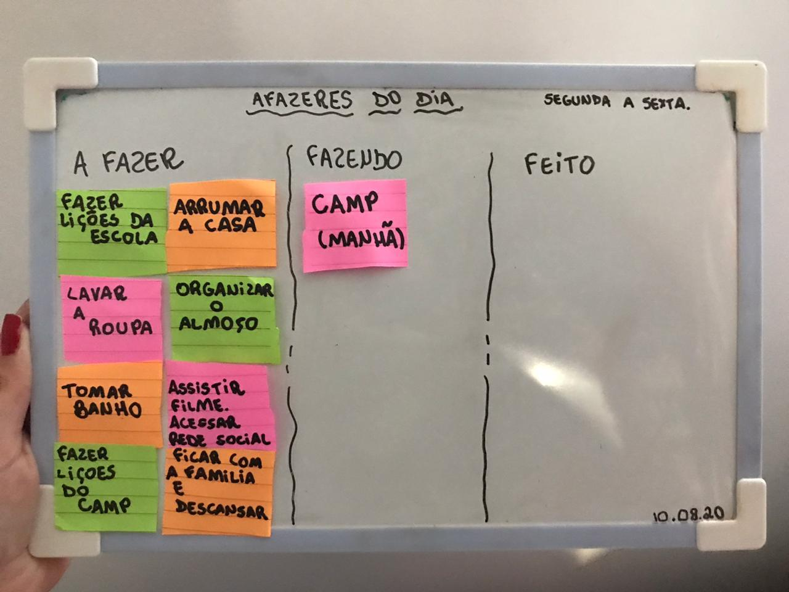
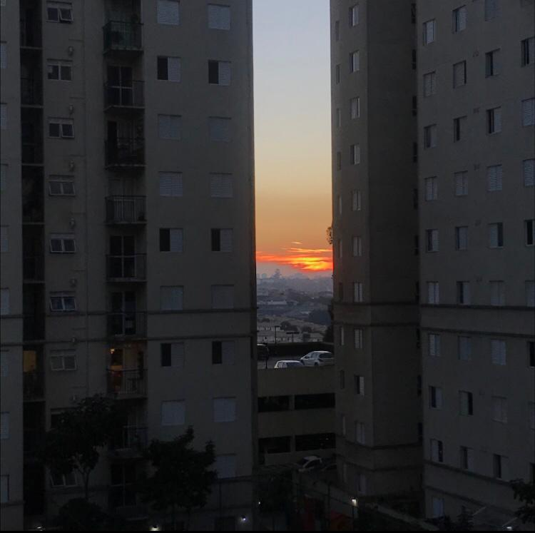

Meus Sonhos e minhas metas
São Paulo, 20/08/2020 - Sobre meus sonhos
Assim que eu conseguir concluir a faculdade de biomedicina que quero fazer, quero realizar meu sonho de fazer um intercambio e daqui uns anos morar fora do brasil. Sei que não é algo facil e simples, mas devemos correr atrás dos nossos sonhos e realiza-los. Sempre tento pensar positivo mesmo as vezes sendo dificil, mas acredito em mim e sei que vou conquistar tudo que desejo. Sonhar e pensar no futuro me fazem bem e é algo que me motiva todos os dias.
KANBAN
São Paulo, 26/10/2020
Sobre o KANBAN
Kanban é um cartão de sinalização que controla os fluxos de materiais e produção em uma indústria. Foi criado na década de 1960 na Toyota para o sistema de abastecimento e controle de estoques, este sistema é muito usado por várias empresas em várias áreas, principalmente no controle de atividades. No curso do Camp Jabaquara aprendi a usar o Kanban no controle das atividades do dia a dia. Uso para planejar minhas atividades escolares e domésticas. Pretendo usar o kanban nas atividades profissionais.
Na pandemia
São Paulo, 15/06/2020 - O que faço para passar o tempo;
Durante essa pandemia eu aprendi a me conhecer mais e descobri que olhar a paisagem me acalma. Fiquei mais proxima dos meus familiares e pra fugir do tedio quando não podia sair falava com meus amigos pelo celular,escutava musica, tirava fotos e desenhava. Tambem fiz alguns cursos online que vão me ajudar muito no futuro.